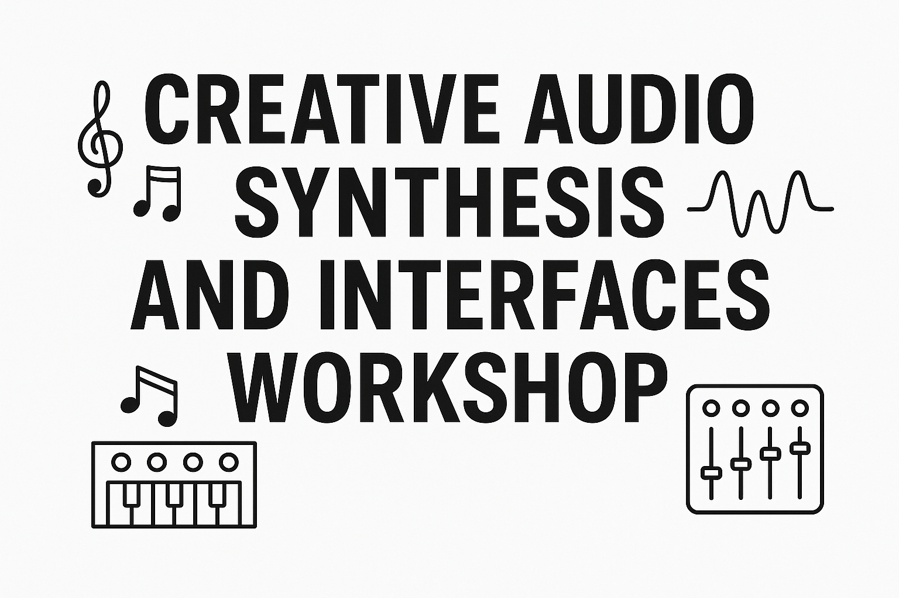

WHEN
15 July 2025WHAT
Talks and performances exploring the intersection of creative audio synthesis and AI-enabled synthesizer programming.WHO ARE WE
Organised by C4DM's
Communication Acoustics LabWHERE
G2 & Performance Lab, Engineering Building,
QMUL’s Mile End campus <access instructions>
Schedule
@ G2
9:30 – Coffee
10:00 – Workshop Introduction
10:10 - Session 1
12:40 – Lunch
13:40 – Session 2
15:40 – Close Workshop
@ Performance Lab
16:00 – Concert Setup
17:00 – Concert Begins
Invited Talks and Performances
Session 1 contains six talks, with a coffee break in the middle. Session 2 includes three talks, followed by a roundtable discussion. The talks are scheduled in the following order: Jordie, Björn, Vicenzo (coffee break), Haokun, Jack, Andrea (lunch break), Ben, Balint, Christopher, and finally the roundtable discussion. The abstracts below follow this presentation order.TALKS
Title: Designing Percussive Timbre Remappings: Negotiating Audio Representations and Evolving Parameter Spaces
Author: Jordie Shier -- Queen Mary University of London
Abstract: Timbre remapping is an approach to audio-to-synthesizer parameter mapping that aims to transfer timbral expressions from a source instrument onto synthesizer controls. This process is complicated by the ill-defined nature of timbre and the complex relationship between synthesizer parameters and their sonic output. In this work, we focus on real-time timbre remapping with percussion instruments, combining technical development with practice-based methods to address these challenges. As a technical contribution, we introduce a genetic algorithm – applicable to black-box synthesizers including VSTs and modular synthesizers – to generate datasets of synthesizer presets that vary according to target timbres. Additionally, we propose a neural network-based approach to predict control features from short onset windows, enabling low-latency performance and feature-based control. Our technical development is grounded in musical practice, demonstrating how iterative and collaborative processes can yield insights into open-ended challenges in DMI design. Experiments on various audio representations uncover meaningful insights into timbre remapping by coupling data-driven design with practice-based reflection. This work is accompanied by an annotated portfolio, presenting a series of musical performances and experiments with reflections.
Title: Facilitating serendipitous sound discoveries with simulations of open-ended evolution
Author: Björn Thor Jónsson -- University of Oslo
Abstract: Björn will explore the application of evolutionary algorithms for sound discovery, particularly how Quality Diversity search can facilitate serendipitous discoveries beyond what can be found by prompting models trained on existing data. A specific sound synthesis approach based on pattern-producing networks, coupled with DSP graphs, will also be examined, along with the integration of its neuro-evolution within the evolutionary simulations. Furthermore, the relevance of these sound discoveries in compositional contexts will be addressed, along with efforts to visualise the evolutionary processes and enable interaction with the discovered artefacts.
Title: Autonomous control of synthesis parameters with listening-based reinforcement learning
Author: Vicenzo Madaghiele -- University of Oslo
Abstract: Music improvisation requires listening, reflection, and timely decision-making. When improvising together, musicians make decisions in time, responding to other musicians’ ideas, their style, and the musical context of the performance. I present a novel approach for agent-based autonomous control of synthesis in an improvised music context. The model employs reinforcement learning to control the continuous parameters of a sound synthesizer in response to live audio from a musician. The agent is trained on a corpus of audio files that exemplify the musician’s instrument and stylistic repertoire. During training, the agent listens and adapts to the incoming sound according to a set of perceptual descriptors by continuously adjusting the parameters of the synthesizer it controls, and a reward function expressing a musical objective. To achieve this objective, the agent learns specific strategies that characterize its autonomous behavior in a live interaction. I discuss the theoretical background, the formal model of improvisational interactions, a preliminary implementation of the model and its application in three selected scenarios.
Title: Can a Sound Matching Model Produce Audio Embeddings that Align with Timbre Similarity Rated by Humans?
Author: Haokun Tian -- Queen Mary University of London
Abstract: Psychoacoustical so-called “timbre spaces” map perceptual similarity ratings of instrument sounds onto low-dimensional embeddings via multidimensional scaling but suffer from scalability issues and are incapable of generalization. Recent results from audio (music and speech) quality assessment as well as image similarity have shown that deep learning provides emergent embeddings that align well with human perception while being largely free from these constraints. In this talk, we present metrics to evaluate the alignment between three representations—extracted from a simple sound matching model—and the existing "timbre space" data containing 2,614 pairwise ratings on 334 audio samples. Among the tested representations, we highlight the effectiveness of the "style" embeddings, which are inspired by image style transfer. We compare our results to commonly used representations, including MFCCs and CLAP embeddings. Furthermore, based on the performance of the style embedding derived from the CLAP model, we demonstrate its broader effectiveness in modeling human timbre perception.
Title: GuitarFlow: Realistic Electric Guitar Synthesis From Tablatures via Flow Matching and Style Transfer
Author: Jackson Loth -- Queen Mary University of London
Abstract: Music generation in the audio domain using artificial intelligence (AI) has witnessed steady progress in recent years. However for some instruments, particularly the guitar, controllable instrument synthesis remains limited in expressivity. We introduce GuitarFlow, a model with a high degree of controllability designed specifically for electric guitar synthesis. The generative process is guided using tablatures, an ubiquitous and intuitive guitar-specific symbolic format. The tablature format easily represents guitar-specific playing techniques (e.g. bends, muted strings and legatos), which are more difficult to represent in other common music notation formats such as MIDI. Our model relies on an intermediary step of first rendering the tablature to audio using a simple sample-based virtual instrument, then performing style transfer using Flow Matching in order to transform the virtual instrument audio into more realistic sounding examples. This results in a model that is quick to train and to perform inference, requiring less than 6 hours of training data. We present the results of objective evaluation metrics, together with a listening test, in which we show significant improvement in the realism of the generated guitar audio from tablatures.
Title: Timbre latent space transformations for interactive musical systems oriented to timbral music-making.
Author: Andrea Bolzoni -- The Open University
Abstract: This talk presents a set of timbre latent space transformations implemented in an interactive musical system for timbral music-making, called TimbReflex. The system enables musicians to explore timbre through turn-taking interactions that structure the musical exchange. By transforming the timbre latent space of the performer’s material, TimbReflex generates sonic variations that elicit further exploration of the musician’s timbral vocabulary. The results show the system's potential to support rich timbral exploration in the context of free improvisation. These findings point toward promising directions for further development and the application of similar methods in interactive, timbre-oriented musical systems.
Title: Why Synthesizer Parameter Estimation Is Hard and How to Make it Easy
Author: Ben Hayes -- Queen Mary University of London
Abstract: Amid the thundering pace of technological progress in AI and machine learning, a seemingly simple problem has remained surprisingly challenging: estimating the parameters of an audio synthesizer that best match a target audio signal. Applying conventional machine learning wisdom — collect more data and scale up your model — does not appear to improve the situation and, in fact, sometimes harms performance. In this talk, we explore how this phenomenon can be explained by symmetry and indeterminacy which are intrinsic to many audio synthesizers. We then illustrate how, by carefully designing models with these characteristics in mind, we can train models to perform synthesizer parameter estimation with dramatically better performance than the current state-of-the-art approaches.
Title: Perceptually Aligned Deep Image Sonification
Author: Balint Laczko -- University of Oslo
Abstract: Imaging technology has dramatically expanded our understanding of biological systems. This overabundance of images has come with unique problems, such as visual overload, which can potentially obscure data relationships and induce eye fatigue or divert vision from important tasks. Image sonification offers potential solutions to these problems by channeling data into the auditory domain, leveraging our natural pattern recognition skills through hearing. In my PhD project I have been exploring the potential of Machine Learning in solving the two fundamental challenges of image sonification: the perceptually aligned representations of images and sounds, and the cross-modal mapping between them. In this talk I will present my journey through timbre spaces, Differentiable DSP, and cross-modal domain transfer in search of new methods for image sonification.
Title: Modulation Discovery with Differentiable Digital Signal Processing
Author: Christopher Mitcheltree -- Queen Mary University of London
Abstract: Modulations are a critical part of sound design and music production, enabling the creation of complex and evolving audio. Modern synthesizers provide envelopes, low frequency oscillators, and more parameter automation tools that allow users to modulate the output with ease. However, determining the modulation signals used to create a sound is difficult, and existing sound-matching / parameter estimation systems are often uninterpretable black boxes or predict high-dimensional framewise parameter values without considering the shape, structure, and routing of the underlying modulation curves. In this talk, we present a neural sound-matching approach that leverages modulation extraction, constrained control signal parameterizations, and differentiable digital signal processing (DDSP) to discover the modulations present in a sound. We demonstrate the effectiveness of our approach on highly modulated synthetic and real audio samples, its applicability to different DDSP synth architectures, and investigate the trade-off it incurs between interpretability and sound-matching accuracy.PERFORMANCES
Title: Experience Replay
Author: Vicenzo Madaghiele -- University of Oslo
Abstract: Experience Replay is an improvised performance in which autonomous sound-generating processes from various sources are combined into a network of feedback relations focusing on dynamic and textural evolution. The performance employs electric guitar, sound granulation and chaotic synthesis to explore states of fragile equilibrium and apparent disorder.
Title: Weaving
Author: Balint Laczko -- University of Oslo
Abstract: Weaving explores how an evolving set of musical phrases create the impression of chamber music, or an imaginary landscape with its own weather. During the performance my instrument records every phrase I make, and gradually takes over, "continuing" the threads I started, first just to free my hands, then to play together with me, and finally, to create a musical landscape of its own, keeping me as the gardener.
Additionally, Björn Thor Jónsson (University of Oslo) will present a demo showcasing his software in a musical context.
ORGANISERS